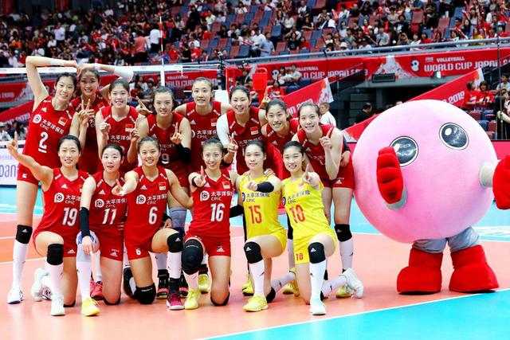
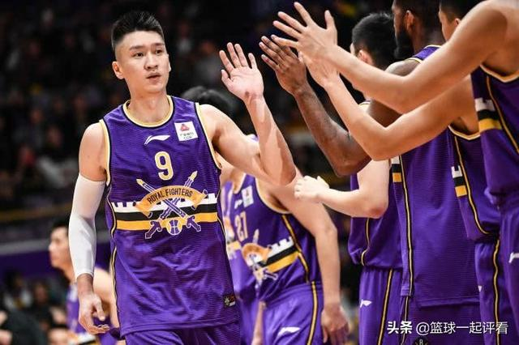
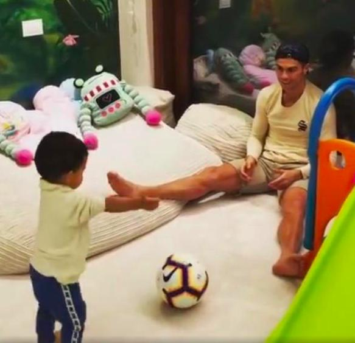
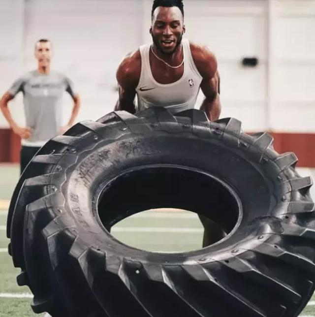
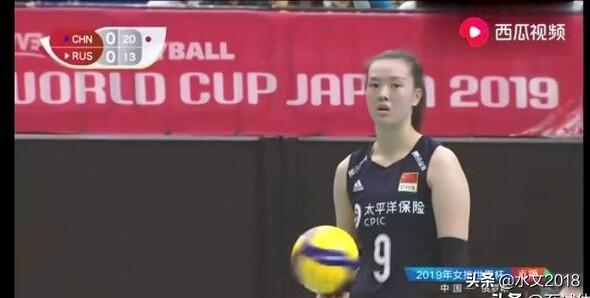
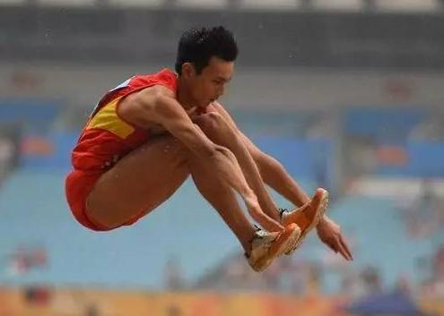

|
体育
|
新闻网 |
|  | 女排姑娘的“外号”都是啥？张常宁被叫“宝宝”，朱婷的最霸气近日，2019-2020赛季中国女排联赛第一阶段正如火如荼地举行，第三轮已经落下帷幕，第四轮比赛将于11月16日如期举行。 中国女排一路走来，有过巅峰，也有过谷底。不得不说，自从2016年郎平带领女排姑娘里约奥运会夺冠后，中国女排再一次崛起。女排世界杯，中国女排以11连胜卫冕世界冠军，中国女排姑娘们再一次证明了自己，站上世界之巅，中国女排影响力达到空前程度。 |
|  | 天赋太可怕！两年没打球，还是最好的中国后卫在CBA中要说近些年最为出色的后卫那当属“亚洲第一后卫”郭艾伦了，不过在新赛季的几场常规赛结束后，这个称号估计就要转让的，因为曾经按个天赋爆棚的后卫回来了，那就是孙悦，曾经被誉为中国最有天赋的后卫。 |
|  | C罗在家接地气，甘当女儿沙发，马特奥镜头感好，迷你罗低调如果一个男人是家里的主要经济来源，那么这个男人在家里的地位也比较高，孩子们都会比较怕他之类的。但是从曝光的C罗和乔治娜一家6口坐在家里的沙发上休息的照片来看，C罗一家人都靠他一个人踢足球养活，但是大家发现C罗在家里的时候超级接地气。 |
|  | 同样是用轮胎训练，周琦，易建联，詹姆斯，约基奇差距真大对于篮球运动员而言，他们需要把身体上的每个部位都练出肌肉，因为篮球对于球员综合素质要求很高。用轮胎训练已经成为一种常态，因为轮胎作为训练工具到处都能找到，而且对于球员上肢力量，核心力量，以及爆发力提高都有很大帮助，因此很多篮球运动员都会选择此方法。不过同样是用轮胎训练，每个人的差距还是很大，最起码今天介绍的这4人，从用轮胎训练就能看出实力差距！ |
人人都怕的奥运会，2032年竟无国申办！网友提议：均摊办奥运会奥林匹克运动会从一开始就一直被各个国家所追求，承办奥林匹克运动会也成为了国力的象征，从苏联奥运会跟美国奥运会举办起来都是有着相当强的实力才能去举办奥林匹运动会，1980年莫斯科奥运会是苏联的最后一次举办奥运会，而随后就解体了也就是证明了，奥运会也不是谁都可以举办的，而美国因为本身经济实力雄厚，截止2019年为止举办了4次奥林匹克运动会，而在第34届夏季奥运会也将会在2028年的美国洛杉矶举办。 |
|
|  | 张常宁发球前为什么喜欢转球？张常宁发球前喜欢把球拿在手上单手转球，是在打沙排期间形成的习惯，现在已经成为了她的招牌动作。 张常宁14岁就被国家沙排队相中，进入了沙排界。打沙排时，排球总会沾有很多沙子，会影响选手的技术发挥，球员就会在发球前想办法把沙子弄掉。张常宁的做法就是转排球，依靠旋转把沙子从球上甩掉。久而久之就形成了这个习惯。 |
|  | 立定跳远最远能跳多少？看看世界纪录4米1是什么概念在这么多体育项目中，大家最喜欢的就是立定跳远。而立定跳远这项运动也是十分常见的，尤其是在上学时期，立定跳远是必考的一个项目，也是众多项目中最简单的，不过是非常需要弹跳能力的。大家还记得自己在中学时期，立定跳远最多能跳多远吗？ |